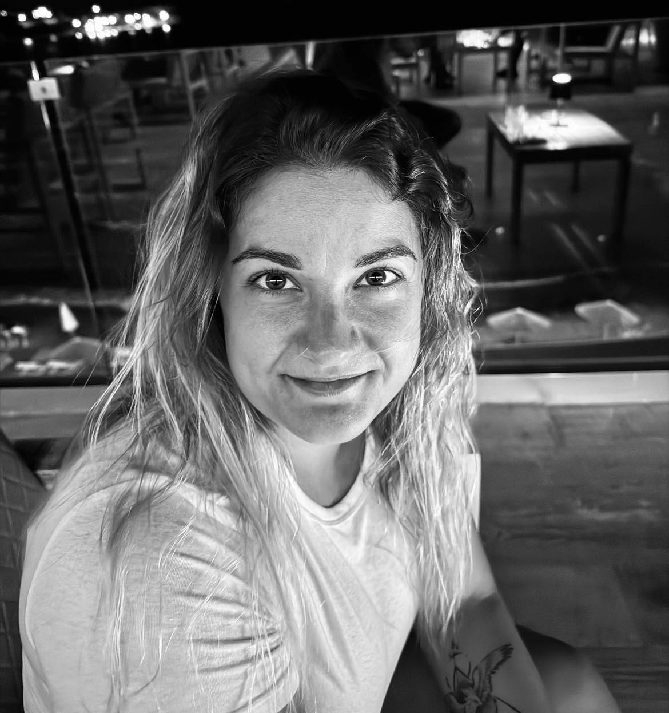

Nora Penzes

Summary
I like challenges, continuous improvement, working in a team, motivating people around me.
Eductaion
- Bachelor's degree, Engineering/Industrial Management - Szent Istvan University (2012-2016)
- Quality Management System Internal Auditor - ÉMI-TÜV SÜD (2016)
- Excel course - LABA (2021)
Skills
- Project management
- Excellent organisational and problem solving skills
- Flexible
- Innovative
- Persistent
Knowledge
- Microsoft Office - Word, PPT, Excel, Visio, Outlook
- English
- B cat. driving licence
Work Experience

- Project Manager - Kraft-Tech
2024.06-08.
As project manager, my job was to manage the renovation of a restaurant in the city centre, which started in May.The project was a complete general construction, including mechanical, electrical, architectural and interior
renovation.
I was responsible for coordinating the day-to-day work of the contractors on site:
- adhering to the pre-established schedule and monitoring the progress of the project,
- Monitoring the invoices,
- Performing administrative tasks related to the project, keeping documentation and records,
- Request for proposals, tendering, contracting with contractors.
Facilities Manager - Dome Group
2022.05-2024.06.
From classical operational tasks, to the preparation of OPEX and CAPEX plans, to the coordination of the daily
work of my technicians and cleaning staff, I have been involved in many exciting challenges and projects at
Dome Group.
In my work I have always strived to optimise tasks, motivate my colleagues and create a good atmosphere.
I am Proud Of...
-
Creating and editing the Facilities Manager's Manual: in collaboration with Quality Management colleagues, we
prepared this manual for new incoming Facilities Managers / Junior Facilities Managers, which includes daily,
weekly, monthly tasks; company expectations; contact details, etc.
-
An excel spreadsheet was created to help facility manager colleagues: the spreadsheet included ongoing tasks,
priorities, costs, expenses, helping facility managers every day.
-
Involvement in the implementation of the APFM fault reporting system: the office building I manage was the test
before the new fault reporting system was implemented at company level. Working closely with IT colleagues,
we developed the system until it was suitable for daily use to handle fault reports for all facilities in the
company.
Operated facilities
- From 10.2023 Ligetcity
- From 01.2023 Buda Square Office Building
- participation in the BREEAM very good certification
- participation in the implementation of major mechanical renovations
- 05.2022-01.2023 BudapestOne Office Building
Other
My Hobbies
Contact Me
© Nora Penzes. All rights reserved.